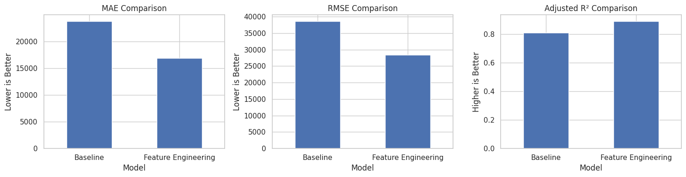

Feature Engineering 실습 결과 보고서
Ames Housing 데이터의 EDA 결과를 바탕으로 결측·오류 처리, 범주형 인코딩, 파생변수를 적용하고 선형회귀 성능 변화를 확인했다. 전처리 기준은 학습 데이터에서 정하고 평가 데이터에는 동일하게 적용하는 것을 원칙으로 했다.
1. 무엇을 바꾸었고, 어떤 변화를 기대했는가?
| 구분 | 적용 방법 | 선택 근거 | 기대 변화 |
|---|---|---|---|
| Neighborhood | 원-핫 인코딩 | 순서가 없는 지역명을 독립적인 이진 열로 분리 | 임의의 순서·거리 학습을 막고 지역별 가격 차이 반영 |
| House_Style | 더미 인코딩 | 기준 범주 하나를 제거해 더미 변수 트랩 방지 | 절편이 있는 선형모델에서 다중공선성 완화 |
| Kitchen_Qual Exter_Qual | 순서형 라벨 인코딩 | Po<Fa<TA<Gd<Ex의 명확한 품질 순서를 정수로 보존 | 열 증가 없이 품질 상승 방향을 모델에 반영 |
| 차고 결측·오류 | 조건부 대체 | Garage_Cars≥1이고 연도 결측이면 Year_Built로 대체(상관 0.83), 차고 0대이면 차고 없음으로 처리 | 차고 부재와 단순 누락을 구분해 정보 손실과 왜곡 감소 |
| 차고연도 이상값 | 2207년 1건만 오류 처리 | 데이터에 2027년은 없고 Garage_Yr_Blt=2207 1건이 확인됨 | 실제 대형 주택 등 정상 관측치는 보존하고 명백한 연도 오류만 교정 |
2. 파생변수 설계
Bath_per_Bedroom
Full_Bath / Bedroom_AbvGr
침실 대비 욕실 편의성
→
Full_Bath / Bedroom_AbvGr
침실 대비 욕실 편의성
Lot_Coverage
Gr_Liv_Area / Lot_Area
대지 대비 생활면적 밀도
→
Gr_Liv_Area / Lot_Area
대지 대비 생활면적 밀도
Overall_Score
Overall_Qual × Overall_Cond
품질과 상태의 결합 효과
Overall_Qual × Overall_Cond
품질과 상태의 결합 효과
비율 변수는 분모가 0인 경우를 별도로 처리해야 한다. 세 변수 모두 Target인 SalePrice를 계산에 사용하지 않아 직접적인 데이터 누수를 피한다.
3. 실제로 어떤 현상이 나타났는가?

.png)
관찰 결과
MAE는 23,759.25에서 16,847.93으로 29.09%, RMSE는 38,577.25에서 28,405.78로 26.37% 감소했다. Adjusted R²는 0.81에서 0.89로 0.08 증가했다. 평균 오차와 큰 오차가 함께 줄면서 설명력도 높아진 방향이다. 저장된 노트북에는 실행 출력이 없어 해당 수치는 제공된 결과 이미지에 근거한다.
MAE는 23,759.25에서 16,847.93으로 29.09%, RMSE는 38,577.25에서 28,405.78로 26.37% 감소했다. Adjusted R²는 0.81에서 0.89로 0.08 증가했다. 평균 오차와 큰 오차가 함께 줄면서 설명력도 높아진 방향이다. 저장된 노트북에는 실행 출력이 없어 해당 수치는 제공된 결과 이미지에 근거한다.
4. 결과에서 무엇을 알 수 있었는가?
① 변수 의미를 반영한 처리가 중요했다.
차고연도 결측을 모두 같은 값으로 채우기보다 차고 유무를 먼저 판단하면 ‘차고 없음’과 ‘연도 누락’을 구분할 수 있다.
② 범주형 변수마다 맞는 인코딩이 달랐다.
명목형은 원-핫·더미, 품질 등급은 순서형 인코딩을 사용해야 불필요한 순서 왜곡과 열 증가를 줄일 수 있다.
③ 파생변수는 관계를 직접 표현했다.
단일 변수만으로 드러나기 어려운 편의성, 밀도, 품질×상태의 결합 효과를 회귀모델이 활용할 수 있게 했다.
④ 성능 향상 원인은 분리 검증이 필요하다.
현재 결과는 여러 처리를 함께 적용한 비교다. 다음에는 인코딩·결측 처리·파생변수를 하나씩 추가하는 실험으로 각 기여도를 확인한다.